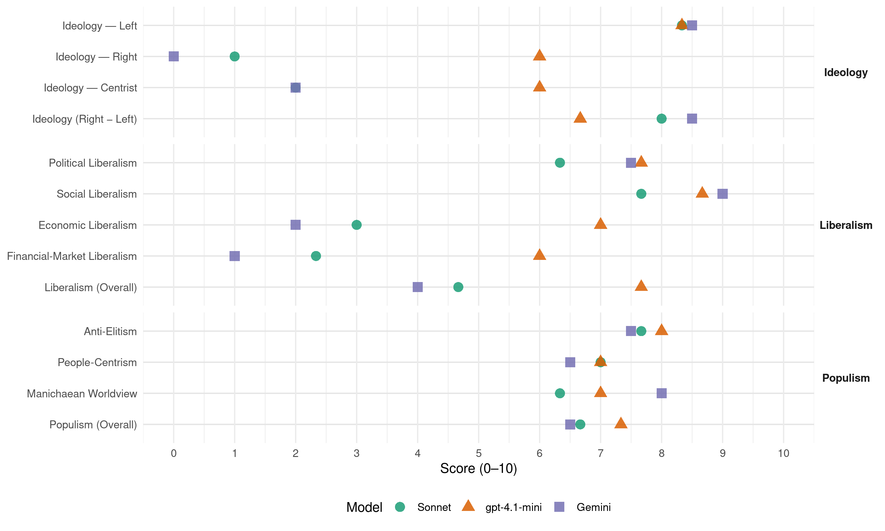

(Spain, 2019)
manifesto_id 33210_201904
Get full text: This site shows derived annotations and short verbatim quotes only. The full manifesto text is © Manifesto Project / WZB — obtain it via manifesto-project.wzb.eu using the manifesto_id above.
Headline scores
| Dimension | Sonnet | gpt-4.1-mini | Gemini |
|---|---|---|---|
| Populism (Overall) | 6.7 | 7.3 | 6.5 |
| Anti-Elitism | 7.7 | 8.0 | 7.5 |
| People-Centrism | 7.0 | 7.0 | 6.5 |
| Manichaean Worldview | 6.3 | 7.0 | 8.0 |
| Ideology (Right − Left) | 8.0 | 6.7 | 8.5 |
| Liberalism (Overall) | 4.7 | 7.7 | 4.0 |
| Political Liberalism | 6.3 | 7.7 | 7.5 |
| Social Liberalism | 7.7 | 8.7 | 9.0 |
| Economic Liberalism | 3.0 | 7.0 | 2.0 |
| Financial-Market Liberalism | 2.3 | 6.0 | 1.0 |
Evidence per dimension
Economic Liberalism
Gemini · score 2.0 · verified · chunk 1
“Frenar la renovación de las concesiones de”
ejes transversales ferroviarios. 24.Mejorar las conexiones ferroviarias internacionales con Francia y Portugal. 25.Frenar la renovación de las concesiones de autopistas a grandes corporaciones. 26.Implementar una estrategia
Gemini · score 2.0 · verified · chunk 3
“Establecer un IRPF más justo”
239.Establecer un IRPF más justo y progresivo, de modo que
gpt-4.1-mini · score 7.0 · verified · chunk 1
“introduciremos leyes que dotaran a la Administracion de instrumentos efectivos y aumentaremos las multas en casos de carteles y oligopolios”
Reforzar las leyes antimonopolio. La desigualdad de fuerzas entre, por un lado, los oligopolios y, por otro, las pymes y las personas consumidoras crece, lo cual lastra nuestra economia. En linea con la actual legislacion estadounidense, desarrollaremos leyes que dotaran a la Administracion de instrumentos efectivos y aumentaremos las multas en casos de carteles y oligopolios.
gpt-4.1-mini · score 7.0 · verified · chunk 2
“recuperar la recaudacion del impuesto sobre sociedades”
Por eso vamos a impulsar un conjunto de propuestas para acabar con los privilegios y garantizar una financiacion adecuada de las politicas publicas. Junto a otras medidas necesarias para mejorar nuestro sistema fiscal, destacamos cinco propuestas especialmente dirigidas a terminar con los privilegios fiscales de una minoría: recuperar la recaudacion del impuesto sobre sociedades, perdida desde el inicio de la crisis por las ventajas concedidas a las grandes empresas; instaurar un impuesto a las grandes fortunas; mejorar la progresividad fiscal del IRPF, igualando la tributacion del trabajo y del capital; establecer impuestos sobre las transacciones financieras y de la banca, y dedicar una atencion especial a los grandes defraudadores fiscales.
gpt-4.1-mini · score 7.0 · verified · chunk 3
“establecer un IRPF más justo y progresivo”
…239.Establecer un IRPF más justo y progresivo, de modo que no toda la carga recaiga en quienes más trabajan. Por un lado, las rentas de mas de 100000 euros anuales contribuiran un poco mas, con un 47%, que llegara hasta el 55% para rentas superiores a 300000 euros anuales, y corregiremos la injusticia de que las rentas del capital (por productos financieros e inversiones) tributen mucho menos que las rentas del trabajo. Se eliminaran tambien las deducciones que benefician solo a quienes tienen rentas mas altas. Al mismo tiempo, se reducira el tipo del primer tramo no exento del IRPF —el tramo mas bajo— al 18%.
Sonnet · score 3.0 · verified · chunk 1
“Recuperar la participación pública en sectores estratégicos”
Recuperar la participación pública en sectores estratégicos y poner en marcha un plan de recuperación industrial en las zonas que han sido deliberadamente desindustrializadas.
Sonnet · score 3.0 · verified · chunk 2
“Intervenir el mercado del alquiler”
Intervenir el mercado del alquiler para impedir subidas abusivas mediante el control de precios
Sonnet · score 3.0 · verified · chunk 3
“dispute espacios de mercado a las grandes corporaciones”
apostando por un sector de reparto publico con un empleo digno y estable, y que dispute espacios de mercado a las grandes corporaciones de la precaria economia de plataforma.
Financial-Market Liberalism
Gemini · score 1.0 · verified · chunk 1
“no pide creditos a los bancos”
libre para cambiar las cosas porque no pide creditos a los bancos y no tiene exministros sentados en los consejos
Gemini · score 1.0 · verified · chunk 3
“impuesto de transacciones financieras que”
240.Fijar un impuesto de transacciones financieras que grave las ventas brutas en
gpt-4.1-mini · score 6.0 · verified · chunk 1
“recuperar los 60000 millones del rescate bancario”
Recuperar los 60000 millones del rescate bancario. En junio de 2017, el Banco de Espana declaro que daba por perdidos 60613 millones de euros del rescate bancario a las cajas y los bancos espanoles otorgado por la Union Europea.
gpt-4.1-mini · score 6.0 · verified · chunk 2
“establecer impuestos sobre las transacciones financieras y de la banca”
Por eso vamos a impulsar un conjunto de propuestas para acabar con los privilegios y garantizar una financiacion adecuada de las politicas publicas. Junto a otras medidas necesarias para mejorar nuestro sistema fiscal, destacamos cinco propuestas especialmente dirigidas a terminar con los privilegios fiscales de una minoría: recuperar la recaudacion del impuesto sobre sociedades, perdida desde el inicio de la crisis por las ventajas concedidas a las grandes empresas; instaurar un impuesto a las grandes fortunas; mejorar la progresividad fiscal del IRPF, igualando la tributacion del trabajo y del capital; establecer impuestos sobre las transacciones financieras y de la banca, y dedicar una atencion especial a los grandes defraudadores fiscales.
gpt-4.1-mini · score 6.0 · verified · chunk 3
“Fijar un impuesto de transacciones financieras que grave las ventas brutas”
…240.Fijar un impuesto de transacciones financieras que grave las ventas brutas en el mismo dia, y no solo las netas, e incluya otras operaciones distintas a la compraventa de acciones (por ejemplo, derivados). Hay una gran diferencia entre un pequeno ahorrador que invierte una parte de sus ahorros en acciones y las operaciones de compraventa de activos financieros varias veces en el mismo dia e incluso durante la misma hora o minuto. Este impuesto afectaria al segundo tipo de operaciones financieras especulativas.
Sonnet · score 3.0 · verified · chunk 1
“implementacion de un impuesto a las transacciones financieras”
Este dinero se puede recuperar en una decada mediante la implementacion de un impuesto a las transacciones financieras, una reforma del impuesto sobre sociedades respecto a la tributacion de las grandes corporaciones y un impuesto especifico a la banca.
Sonnet · score 2.0 · verified · chunk 2
“impuesto de transacciones financieras”
Fijar un impuesto de transacciones financieras que grave las ventas brutas en el mismo dia, y no solo las netas
Sonnet · score 2.0 · verified · chunk 3
“impuesto de transacciones financieras que grave las ventas brutas”
240.Fijar un impuesto de transacciones financieras que grave las ventas brutas en el mismo dia, y no solo las netas
Political Liberalism
Gemini · score 8.0 · verified · chunk 1
“Reformar la ley electoral para atender al”
sus derechos sean como los del resto de las personas trabajadoras. 115.Reformar la ley electoral para atender al principio de «una persona, un voto» y aumentar
Gemini · score 7.0 · verified · chunk 3
“Resolución democrática del conflicto catalán”
256.Resolución democrática del conflicto catalán. La gestion viable del conflicto
gpt-4.1-mini · score 8.0 · verified · chunk 1
“democracia espanola exige que quienes tienen un enorme poder financiero no puedan aprovecharlo para controlar tambien la comunicacion”
…la salud de la democracia espanola exige que quienes tienen un enorme poder financiero no puedan aprovecharlo para controlar tambien la comunicacion y la formacion de opinion publica en nuestro país.
gpt-4.1-mini · score 8.0 · verified · chunk 2
“la justicia se siga administrando bajo la formula arcaica de «en nombre del Rey»”
así como el hecho de que, en pleno siglo xxi, la justicia se siga administrando bajo la formula arcaica de «en nombre del Rey», cuando, en realidad, esta emana del pueblo.
gpt-4.1-mini · score 7.0 · verified · chunk 3
“reformaremos la Agencia Tributaria y las Administraciones tributarias”
…Poner en marcha una Estrategia Nacional contra el Fraude Fiscal. Con este fin, reformaremos la Agencia Tributaria y las Administraciones tributarias de las comunidades autonomas para dotarlas de un caracter federal, de mayores recursos y de completa autonomia respecto al poder politico y economico. A su vez, se creará una unica base de datos fiscales que integre toda la informacion necesaria para combatir el fraude; crearemos una Oficina de Lucha contra Grandes Defraudadores, dotada con medios suficientes para realizar campanas especificas contra los principales focos de fraude fiscal; incrementaremos los plazos de prescripcion tributaria y penal a cinco o diez anos, e incluiremos mayores penas en el Codigo Penal y las haremos extensibles a los colaboradores o responsables solidarios del fraude.
Sonnet · score 6.0 · verified · chunk 1
“Reformar la ley electoral para atender al principio de «una persona, un voto»”
Reformar la ley electoral para atender al principio de «una persona, un voto» y aumentar la proporcionalidad del sistema.
Sonnet · score 7.0 · verified · chunk 2
“Despolitizar el Tribunal Constitucional”
Despolitizar el Tribunal Constitucional con un sistema de nombramientos en el que prime el consenso y no las cuotas partidistas
Sonnet · score 6.0 · verified · chunk 3
“Resolución democrática del conflicto catalán”
256.Resolución democrática del conflicto catalán. La gestion viable del conflicto en Cataluna pasa por construir un proceso de reconciliacion
Liberalism (Overall)
Gemini · score 5.0 · verified · chunk 1
“Reformar la ley electoral para atender al”
sus derechos sean como los del resto de las personas trabajadoras. 115.Reformar la ley electoral para atender al principio de «una persona, un voto» y aumentar
Gemini · score 3.0 · verified · chunk 3
“Establecer un IRPF más justo”
239.Establecer un IRPF más justo y progresivo, de modo que
gpt-4.1-mini · score 8.0 · verified · chunk 1
“democracia espanola exige que quienes tienen un enorme poder financiero no puedan aprovecharlo para controlar tambien la comunicacion”
…la salud de la democracia espanola exige que quienes tienen un enorme poder financiero no puedan aprovecharlo para controlar tambien la comunicacion y la formacion de opinion publica en nuestro país.
gpt-4.1-mini · score 8.0 · verified · chunk 2
“recuperar la recaudacion del impuesto sobre sociedades”
Por eso vamos a impulsar un conjunto de propuestas para acabar con los privilegios y garantizar una financiacion adecuada de las politicas publicas. Junto a otras medidas necesarias para mejorar nuestro sistema fiscal, destacamos cinco propuestas especialmente dirigidas a terminar con los privilegios fiscales de una minoría: recuperar la recaudacion del impuesto sobre sociedades, perdida desde el inicio de la crisis por las ventajas concedidas a las grandes empresas; instaurar un impuesto a las grandes fortunas; mejorar la progresividad fiscal del IRPF, igualando la tributacion del trabajo y del capital; establecer impuestos sobre las transacciones financieras y de la banca, y dedicar una atencion especial a los grandes defraudadores fiscales.
gpt-4.1-mini · score 7.0 · verified · chunk 3
“establecer un IRPF más justo y progresivo”
…239.Establecer un IRPF más justo y progresivo, de modo que no toda la carga recaiga en quienes más trabajan. Por un lado, las rentas de mas de 100000 euros anuales contribuiran un poco mas, con un 47%, que llegara hasta el 55% para rentas superiores a 300000 euros anuales, y corregiremos la injusticia de que las rentas del capital (por productos financieros e inversiones) tributen mucho menos que las rentas del trabajo. Se eliminaran tambien las deducciones que benefician solo a quienes tienen rentas mas altas. Al mismo tiempo, se reducira el tipo del primer tramo no exento del IRPF —el tramo mas bajo— al 18%.
Sonnet · score 5.0 · verified · chunk 1
“conquistar nuestra democracia y ponemos las instituciones a la altura de la gente”
Este camino solo es viable, en definitiva, si conquistamos nuestra democracia y ponemos las instituciones a la altura de la gente de nuestro país.
Sonnet · score 5.0 · verified · chunk 2
“Garantizar el derecho a una Justicia de calidad”
Garantizar el derecho a una Justicia de calidad. La Justicia es un servicio publico de acceso universal
Sonnet · score 4.0 · verified · chunk 3
“impuesto a la banca que aumente 10 puntos el tipo impositivo”
241.Establecer un impuesto a la banca que aumente 10 puntos el tipo impositivo de las entidades financieras en el impuesto sobre sociedades.
Anti-Elitism
Gemini · score 9.0 · verified · chunk 1
“Los portavoces mediaticos de los poderosos”
Espana mejor que unos nos quieren robar y que otros no se atreven a construir. Los portavoces mediaticos de los poderosos y sus brazos parlamentarios te diran por tierra, mar y aire
Gemini · score 6.0 · verified · chunk 3
“las derechas de Aznar quieren enfrentar”
as, las derechas de Aznar quieren enfrentar a los distintos pueblos de este
gpt-4.1-mini · score 8.0 · verified · chunk 1
“los portavoces mediaticos de los poderosos y sus brazos parlamentarios”
…que unos nos quieren robar y que otros no se atreven a construir. Los portavoces mediaticos de los poderosos y sus brazos parlamentarios te diran por tierra, mar y aire que «no se puede». Es el mantra triste que sus duenos los obligan a repetir. Pero recuerda: hay una fuerza politica que tiene las manos libres para cambiar las cosas porque no pide creditos a los bancos…
gpt-4.1-mini · score 8.0 · verified · chunk 2
“la capacidad de influencia de determinados intereses privados organizados en torno a grupos de presion”
Para la democracia espanola, resulta preocupante la capacidad de influencia de determinados intereses privados organizados en torno a grupos de presion para incidir en las normas juridicas y en las decisiones de los poderes publicos, incluido el manejo de sus recursos.
gpt-4.1-mini · score 8.0 · verified · chunk 3
“la prohibicion dejaria sin efecto estas operaciones interpuestas”
…de la misma persona, su familia o una persona de confianza, creada con el fin de ponerla a disposicion de quien la disfruta pagando menos impuestos por su adquisicion y tenencia. La prohibicion dejaria sin efecto estas operaciones interpuestas y atribuiria la propiedad de la vivienda directamente a quien la ha pagado y la disfruta, que tendra que abonar los correspondientes impuestos, como hacen todos los espanoles y espanolas. Las sociedades mercantiles deben servir para participar en la actividad mercantil, no para eludir impuestos en el disfrute privado de los bienes y servicios.
Sonnet · score 9.0 · verified · chunk 1
“no pide creditos a los bancos y no tiene exministros sentados en los consejos de administracion del IBEX35”
hay una fuerza politica que tiene las manos libres para cambiar las cosas porque no pide creditos a los bancos y no tiene exministros sentados en los consejos de administracion del IBEX35
Sonnet · score 7.0 · verified · chunk 2
“las elites de nuestro país no solo han expulsado”
Las elites de nuestro país no solo han expulsado a cientos de miles de compatriotas, sino que han colaborado en que pierdan derechos
Sonnet · score 7.0 · verified · chunk 3
“rescate fue una operacion especifica destinada al sector bancario”
Del mismo modo que el rescate fue una operacion especifica destinada al sector bancario y no se extendio a trabajadoras y trabajadores autonomos, familias, pymes
Ideology — Centrist
Gemini · score 2.0 · verified · chunk 1
“La historia la escribes tù”
ni los tertulianos, ni las cloacas ni las encuestas. La historia la escribes tù. Horizonte Verde y Nuevo Modelo Industrial Lo ha dicho
gpt-4.1-mini · score 7.0 · verified · chunk 1
“los tres partidos de Aznar (PP, Ciudadanos y VOX, que son basicamente lo mismo)”
En las elecciones del 28 de abril hay tres opciones: cualquiera de los tres partidos de Aznar (PP, Ciudadanos y VOX, que son basicamente lo mismo), el PSOE o Unidas Podemos.
gpt-4.1-mini · score 5.0 · verified · chunk 2
“la justicia se siga administrando bajo la formula arcaica de «en nombre del Rey»”
así como el hecho de que, en pleno siglo xxi, la justicia se siga administrando bajo la formula arcaica de «en nombre del Rey», cuando, en realidad, esta emana del pueblo.
gpt-4.1-mini · score 6.0 · verified · chunk 3
“Desde su misma Constitucion, este es un país plurinacional”
…la despoblacion en las comarcas más vulnerables, con una dotacion inicial de 500 millones anuales del Estado, que se complementará con el presupuesto europeo derivado del Programa Marco de Desarrollo Sostenible del Medio Rural, que impulsaremos en la Union Europea con un horizonte de 5 años. 253.Superación del actual marco institucional de las Diputaciones Provinciales. Iniciaremos un debate de Estado para actualizar la organizacion municipal, con las premisas de ir más allá de la estructura arcaica de las Diputaciones Provinciales y de generar instituciones capaces de frenar la fragmentacion y el debilitamiento de unos municipios que son cada vez más pequeños, así como de poder gestionar de manera democrática un aumento de los servicios comunes, por ejemplo, a través de las instituciones comarcales. Un primer paso consistirá en la implementacion inmediata de la Ley 45/2007, para el Desarrollo Sostenible del Medio Rural, para estudiar, al mismo tiempo, vías de mejora y superacion de este marco. 254. Impulso a la financiación municipal mediante la articulacion del criterio poblacional, junto a otros criterios, con el objetivo de cerrar la brecha territorial y la incorporacion de fondos de compensacion del valor forestal que aumenten la contribucion del conjunto del país al sostenimiento de los bienes comunes ligados al mundo rural. Por ejemplo, una parte de la financiacion para la lucha contra incendios y para el mantenimiento de las masas forestales y los bienes naturales se destinará directamente a la financiacion municipal de los pueblos que contribuyen directamente a esta tarea. 255.Reformar el sistema de financiación autonómica. El nuevo sistema de financiacion autonomica se diseñará en diálogo con todas las comunidades autonomas, de manera vinculada a una reforma fiscal y a la solucion del problema de las deudas autonomicas producidas por la infrafinanciacion. Este nuevo sistema garantizará que se alcancen, al menos, tres condiciones: en lugar de estar basado en un «techo de gasto», que impide que los derechos de la ciudadanía sean efectivos por la vía de limitar los recursos de las Autonomias para prestar servicios publicos, se basars en un «suelo de ingresos», que permitirs financiar servicios publicos dignos en toda Espana; todas las comunidades autonomas recibirsn mss financiacion que la que reciben en la actualidad, pues hay que tener en cuenta que, aparte de su tradicional infrafinanciacion, los recortes posteriores a 2009 se hicieron recaer de manera desproporcionada sobre ellas; y se reducirs la desigualdad territorial en cuanto a financiacion. 256.Resolución democrática del conflicto catalán. La gestion viable del conflicto en Cataluna pasa por construir un proceso de reconciliacion que permita el dislogo y llegar a acuerdos. Apostamos por un referendum pactado en el que Podemos defenders un nuevo encaje para Cataluna en Espana.
Sonnet · score 2.0 · verified · chunk 1
“Tenemos un proyecto de país valiente”
Las personas que sabemos que la mejor manera de frenar a los jinetes de la extrema derecha es blindar derechos y mirar al futuro no nos conformamos con «lo que hay». Tenemos un proyecto de país valiente.
Sonnet · score 2.0 · verified · chunk 2
“la ciudadania debe poder saberlo”
la ciudadania debe poder saberlo. Para la democracia espanola, resulta preocupante la capacidad de influencia de determinados intereses privados
Sonnet · score 2.0 · verified · chunk 3
“transformar el enfrentamiento en dialogo”
tenemos la tarea de transformar el enfrentamiento en dialogo, porque, para asumir los retos que tenemos por delante, debemos estar juntos
Ideology — Left
Gemini · score 9.0 · verified · chunk 1
“aumentar los privilegios fiscales de las grandes”
derechos de las mujeres y comparten identico programa economico: aumentar los privilegios fiscales de las grandes corporaciones y las grandes fortunas y seguir machacando
Gemini · score 8.0 · verified · chunk 3
“impuesto para las grandes fortunas”
237.Crear un impuesto para las grandes fortunas que grave los grandes patrimonios
gpt-4.1-mini · score 8.0 · verified · chunk 1
“aumentar los privilegios fiscales de las grandes corporaciones y las grandes fortunas y seguir machacando a la gente trabajadora”
Los tres de Aznar quieren llevarnos cuarenta años al pasado en libertades civiles y derechos de las mujeres y comparten identico programa economico: aumentar los privilegios fiscales de las grandes corporaciones y las grandes fortunas y seguir machacando a la gente trabajadora.
gpt-4.1-mini · score 8.0 · verified · chunk 2
“recuperar la recaudacion del impuesto sobre sociedades”
Por eso vamos a impulsar un conjunto de propuestas para acabar con los privilegios y garantizar una financiacion adecuada de las politicas publicas. Junto a otras medidas necesarias para mejorar nuestro sistema fiscal, destacamos cinco propuestas especialmente dirigidas a terminar con los privilegios fiscales de una minoría: recuperar la recaudacion del impuesto sobre sociedades, perdida desde el inicio de la crisis por las ventajas concedidas a las grandes empresas; instaurar un impuesto a las grandes fortunas; mejorar la progresividad fiscal del IRPF, igualando la tributacion del trabajo y del capital; establecer impuestos sobre las transacciones financieras y de la banca, y dedicar una atencion especial a los grandes defraudadores fiscales.
gpt-4.1-mini · score 9.0 · verified · chunk 3
“Crear un impuesto para las grandes fortunas que grave los grandes patrimonios”
…Crear un impuesto para las grandes fortunas que grave los grandes patrimonios con el fin de recaudar un 1% del PIB de patrimonios superiores a un millon de euros, y de forma progresiva. Se trata de un impuesto similar al que se esta proponiendo para la UE y Estados Unidos. Tendra un minimo exento por primera vivienda de 400000 euros y gravara con un 2 % los patrimonios de mas de un millon de euros, con un 2,5% los patrimonios de mas de 10 millones de euros, con un 3% los patrimonios superiores a los 50 millones y con un 3,5% los patrimonios de mas de 100 millones de euros, de forma que la mayor parte del impuesto recaiga sobre los mil patrimonios mas altos del país.
Sonnet · score 9.0 · verified · chunk 1
“aumentar los privilegios fiscales de las grandes corporaciones y las grandes fortunas”
Los tres de Aznar quieren llevarnos cuarenta años al pasado en libertades civiles… aumentar los privilegios fiscales de las grandes corporaciones y las grandes fortunas y seguir machacando a la gente trabajadora.
Sonnet · score 8.0 · verified · chunk 2
“eliminar los privilegios fiscales de las grandes corporaciones”
Eliminar los privilegios fiscales de las grandes corporaciones en el impuesto sobre sociedades y bajárselo a las pymes
Sonnet · score 8.0 · verified · chunk 3
“impuesto para las grandes fortunas que grave los grandes patrimonios”
237.Crear un impuesto para las grandes fortunas que grave los grandes patrimonios con el fin de recaudar un 1% del PIB
Ideology (Right − Left)
Gemini · score 9.0 · verified · chunk 1
“aumentar los privilegios fiscales de las grandes”
derechos de las mujeres y comparten identico programa economico: aumentar los privilegios fiscales de las grandes corporaciones y las grandes fortunas y seguir machacando
Gemini · score 8.0 · verified · chunk 3
“impuesto para las grandes fortunas”
237.Crear un impuesto para las grandes fortunas que grave los grandes patrimonios
gpt-4.1-mini · score 7.0 · verified · chunk 1
“los tres partidos de Aznar (PP, Ciudadanos y VOX, que son basicamente lo mismo)”
En las elecciones del 28 de abril hay tres opciones: cualquiera de los tres partidos de Aznar (PP, Ciudadanos y VOX, que son basicamente lo mismo), el PSOE o Unidas Podemos.
gpt-4.1-mini · score 6.0 · verified · chunk 2
“recuperar la recaudacion del impuesto sobre sociedades”
Por eso vamos a impulsar un conjunto de propuestas para acabar con los privilegios y garantizar una financiacion adecuada de las politicas publicas. Junto a otras medidas necesarias para mejorar nuestro sistema fiscal, destacamos cinco propuestas especialmente dirigidas a terminar con los privilegios fiscales de una minoría: recuperar la recaudacion del impuesto sobre sociedades, perdida desde el inicio de la crisis por las ventajas concedidas a las grandes empresas; instaurar un impuesto a las grandes fortunas; mejorar la progresividad fiscal del IRPF, igualando la tributacion del trabajo y del capital; establecer impuestos sobre las transacciones financieras y de la banca, y dedicar una atencion especial a los grandes defraudadores fiscales.
gpt-4.1-mini · score 7.0 · verified · chunk 3
“Crear un impuesto para las grandes fortunas que grave los grandes patrimonios”
…Crear un impuesto para las grandes fortunas que grave los grandes patrimonios con el fin de recaudar un 1% del PIB de patrimonios superiores a un millon de euros, y de forma progresiva. Se trata de un impuesto similar al que se esta proponiendo para la UE y Estados Unidos. Tendra un minimo exento por primera vivienda de 400000 euros y gravara con un 2 % los patrimonios de mas de un millon de euros, con un 2,5% los patrimonios de mas de 10 millones de euros, con un 3% los patrimonios superiores a los 50 millones y con un 3,5% los patrimonios de mas de 100 millones de euros, de forma que la mayor parte del impuesto recaiga sobre los mil patrimonios mas altos del país.
Sonnet · score 9.0 · verified · chunk 1
“Cada vez que hay que enfrentarse a las electricas, a la banca o a los fondos buitre”
Cada vez que hay que enfrentarse a las electricas, a la banca o a los fondos buitre para defender los derechos de la gente, al PSOE le tiemblan las piernas.
Sonnet · score 8.0 · verified · chunk 2
“acabar con los privilegios y garantizar una financiación adecuada”
vamos a impulsar un conjunto de propuestas para acabar con los privilegios y garantizar una financiación adecuada de las políticas públicas
Sonnet · score 7.0 · verified · chunk 3
“IRPF más justo y progresivo”
239.Establecer un IRPF más justo y progresivo, de modo que no toda la carga recaiga en quienes más trabajan.
Ideology — Right
Gemini · score 0.0 · verified · chunk 1
“frenar a los jinetes de la extrema”
saber que la mejor manera de frenar a los jinetes de la extrema derecha es blindar derechos y mirar al futuro no
gpt-4.1-mini · score 6.0 · verified · chunk 1
“los jinetes de la extrema derecha”
…la mejor manera de frenar a los jinetes de la extrema derecha es blindar derechos y mirar al futuro no nos conformamos con «lo que hay». Tenemos un proyecto de país valiente.
Sonnet · score 1.0 · verified · chunk 1
“prohibiran las practicas de competencia desleal basadas en la utilizacion de flotas de otros paises”
se prohibiran las practicas de competencia desleal basadas en la utilizacion de flotas de otros paises para la prestacion de servicios internos
Sonnet · score 1.0 · verified · chunk 2
“Rechazaremos todos los acuerdos de libre comercio”
Rechazaremos todos los acuerdos de libre comercio de ultima generacion que hacen vulnerables nuestros sectores productivos y estrategicos
Sonnet · score 1.0 · verified · chunk 3
“país plurinacional en el que la inmensa mayoria”
desde su misma Constitucion, este es un país plurinacional en el que la inmensa mayoria de sus pueblos conviven con fraternidad
Manichaean Worldview
Gemini · score 8.0 · verified · chunk 1
“Espana mejor que unos nos quieren robar”
Este programa que tienes en tus manos dibuja esa Espana mejor que unos nos quieren robar y que otros no se atreven a construir. Los
gpt-4.1-mini · score 7.0 · verified · chunk 1
“los jinetes de la extrema derecha”
…la mejor manera de frenar a los jinetes de la extrema derecha es blindar derechos y mirar al futuro no nos conformamos con «lo que hay». Tenemos un proyecto de país valiente.
gpt-4.1-mini · score 7.0 · verified · chunk 2
“la maquinaria de la corrupcion con graves consecuencias”
Se prestara asesoramiento tecnico y formacion actualizada a los agentes especializados en la prevencion y persecucion de la corrupcion y al conjunto de los trabajadores y trabajadoras del sector publico; y, asimismo, se ofrecera proteccion real a quienes denuncien, pues casi siempre se enfrentan en solitario a la maquinaria de la corrupcion con graves consecuencias, al tiempo que se habilitaran formas seguras y veraces de denuncia para proteger la identidad de las personas que denuncien.
gpt-4.1-mini · score 7.0 · verified · chunk 3
“la Iglesia espanola no solo recibe fondos de nuestra declaracion de la renta”
…exencion del IBI de la cual goza la Iglesia. En nuestro país nunca se ha acometido una verdadera separacion entre la Iglesia catolica y el Estado. A consecuencia de ello, la Iglesia sigue disfrutando de privilegios que son imposibles de explicar, al mismo tiempo que a la gente solo le crece el importe de las facturas. Uno de estos privilegios es la exencion de pagar el impuesto sobre bienes inmuebles (I13I) por los bienes que dice poseer. Mientras que una persona normal tiene que llegar a situaciones de gran necesidad para que se le permita no pagar el I13I, la Iglesia espanola no solo recibe fondos de nuestra declaracion de la renta que luego gasta en televisiones sectarias que nadie ve, sino que, ademas, se le permite no pagar impuestos por sus propiedades.
Sonnet · score 8.0 · verified · chunk 1
“Los portavoces mediaticos de los poderosos y sus brazos parlamentarios”
Los portavoces mediaticos de los poderosos y sus brazos parlamentarios te diran por tierra, mar y aire que «no se puede». Es el mantra triste que sus duenos los obligan a repetir.
Sonnet · score 6.0 · verified · chunk 2
“intereses de los bancos alemanes por delante de los nuestros”
no les costo ni cinco minutos reformar la Constitucion para poner los intereses de los bancos alemanes por delante de los nuestros
Sonnet · score 5.0 · verified · chunk 3
“las derechas de Aznar quieren enfrentar a los distintos pueblos”
Al mismo tiempo que dejan una Espana vaciada, las derechas de Aznar quieren enfrentar a los distintos pueblos de este país.
People-Centrism
Gemini · score 8.0 · verified · chunk 1
“confia en nuestro pueblo para afrontar”
Tenemos un proyecto de país valiente. Un proyecto de país que confia en nuestro pueblo para afrontar los retos y las oportunidades mss importantes de nuestro
Gemini · score 5.0 · verified · chunk 3
“Recuperar para la gente el impuesto”
246.Recuperar para la gente el impuesto de las hipotecas. Las personas
gpt-4.1-mini · score 9.0 · verified · chunk 1
“confia en nuestro pueblo para afrontar los retos”
…un proyecto de país valiente. Un proyecto de país que confia en nuestro pueblo para afrontar los retos y las oportunidades mss importantes de nuestro tiempo y que lo hace cuidando a la gente trabajadora y poniendo la vida en el centro.
gpt-4.1-mini · score 6.0 · verified · chunk 2
“cuando, en realidad, esta emana del pueblo”
así como el hecho de que, en pleno siglo xxi, la justicia se siga administrando bajo la formula arcaica de «en nombre del Rey», cuando, en realidad, esta emana del pueblo.
gpt-4.1-mini · score 6.0 · verified · chunk 3
“Recuperar para la gente el impuesto de las hipotecas”
…publica; crearemos una Oficina de Lucha contra Grandes Defraudadores, dotada con medios suficientes para realizar campanas especificas contra los principales focos de fraude fiscal; incrementaremos los plazos de prescripcion tributaria y penal a cinco o diez anos, e incluiremos mayores penas en el Codigo Penal y las haremos extensibles a los colaboradores o responsables solidarios del fraude. Situaremos el umbral para considerar delito de defraudacion a la Hacienda estatal, autonomica, foral y local en 50000 euros. Tambien publicaremos, de manera inmediata, la lista de amnistiados fiscales de los Gobiernos anteriores e incluiremos la prohibicion de decretar amnistias fiscales en la Constitucion, ya que una simple prevision legal puede cambiarse con la siguiente mayoria parlamentaria. 246. Recuperar para la gente el impuesto de las hipotecas. Las personas hipotecadas recuperaran todos los impuestos relacionados con las hipotecas que no debieron pagar, tal como indico la primera sentencia del Tribunal Supremo.
Sonnet · score 8.0 · verified · chunk 1
“La historia la escribes tù”
La historia no la escriben ni los medios que son propiedad de los bancos, ni los tertulianos, ni las cloacas ni las encuestas. La historia la escribes tù.
Sonnet · score 7.0 · verified · chunk 2
“la ciudadania debe poder saberlo”
la ciudadania debe poder saberlo. Para la democracia espanola, resulta preocupante la capacidad de influencia de determinados intereses privados
Sonnet · score 6.0 · verified · chunk 3
“Recuperar para la gente el impuesto de las hipotecas”
246.Recuperar para la gente el impuesto de las hipotecas. Las personas hipotecadas recuperaran todos los impuestos relacionados con las hipotecas
Populism (Overall)
Gemini · score 8.0 · verified · chunk 1
“Los portavoces mediaticos de los poderosos”
Espana mejor que unos nos quieren robar y que otros no se atreven a construir. Los portavoces mediaticos de los poderosos y sus brazos parlamentarios te diran por tierra, mar y aire
Gemini · score 5.0 · verified · chunk 3
“Recuperar para la gente el impuesto”
246.Recuperar para la gente el impuesto de las hipotecas. Las personas
gpt-4.1-mini · score 8.0 · verified · chunk 1
“los portavoces mediaticos de los poderosos y sus brazos parlamentarios”
…que unos nos quieren robar y que otros no se atreven a construir. Los portavoces mediaticos de los poderosos y sus brazos parlamentarios te diran por tierra, mar y aire que «no se puede». Es el mantra triste que sus duenos los obligan a repetir.
gpt-4.1-mini · score 7.0 · verified · chunk 2
“la capacidad de influencia de determinados intereses privados organizados en torno a grupos de presion”
Para la democracia espanola, resulta preocupante la capacidad de influencia de determinados intereses privados organizados en torno a grupos de presion para incidir en las normas juridicas y en las decisiones de los poderes publicos, incluido el manejo de sus recursos.
gpt-4.1-mini · score 7.0 · verified · chunk 3
“la prohibicion dejaria sin efecto estas operaciones interpuestas”
…de la misma persona, su familia o una persona de confianza, creada con el fin de ponerla a disposicion de quien la disfruta pagando menos impuestos por su adquisicion y tenencia. La prohibicion dejaria sin efecto estas operaciones interpuestas y atribuiria la propiedad de la vivienda directamente a quien la ha pagado y la disfruta, que tendra que abonar los correspondientes impuestos, como hacen todos los espanoles y espanolas. Las sociedades mercantiles deben servir para participar en la actividad mercantil, no para eludir impuestos en el disfrute privado de los bienes y servicios.
Sonnet · score 8.0 · verified · chunk 1
“poniendo la vida en el centro”
pone encima de la mesa la esperanza de los pensionistas, del 8M y de los jovenes que alertan sobre el cambio climatico y la convierte en la ambicion de construir un país mejor… cuidando a la gente trabajadora y poniendo la vida en el centro
Sonnet · score 6.0 · verified · chunk 2
“ese 1% una capacidad de influencia”
Esto es lo que le da a ese 1% una capacidad de influencia y de echar el freno a las reformas que necesita este país
Sonnet · score 6.0 · verified · chunk 3
“recuperar los 60000 millones del rescate bancario”
tiene todo el sentido establecer un impuesto especifico para recuperar, tambien a traves de otras reformas, los 60000 millones del rescate bancario.
Social Liberalism